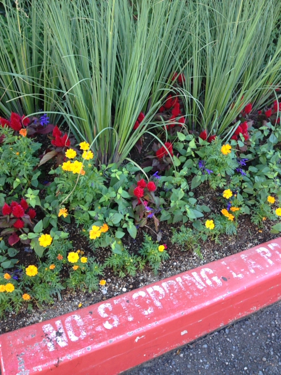
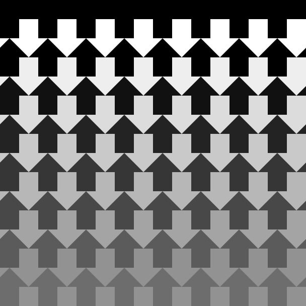
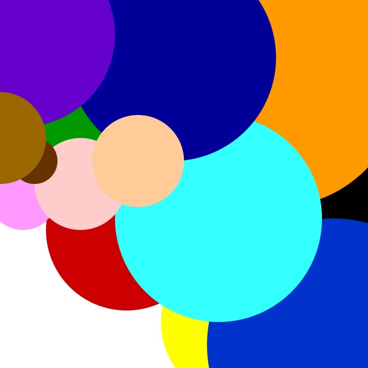
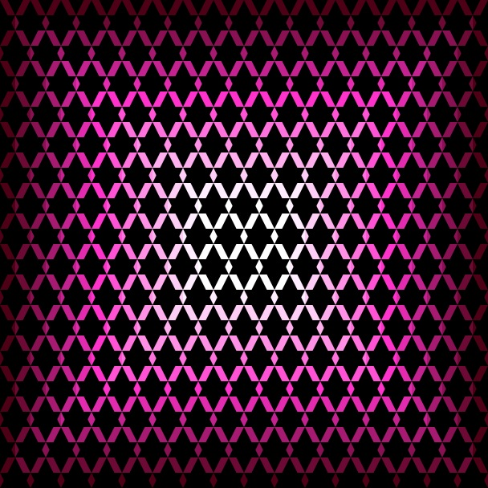
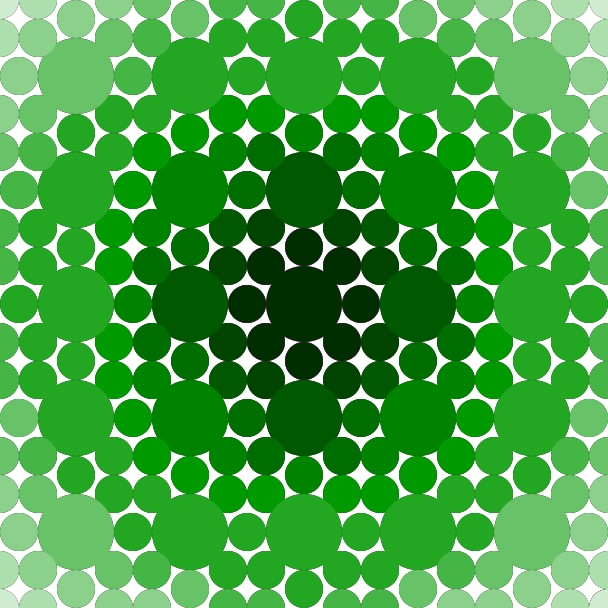
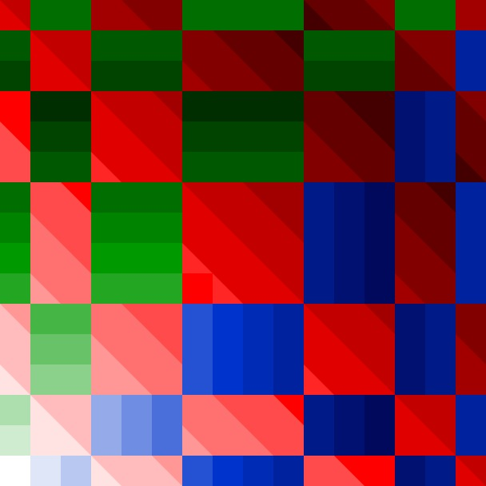
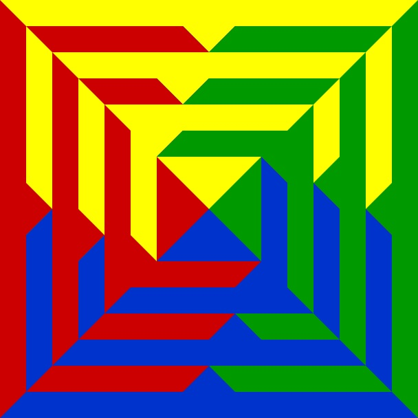

WORKS
Photography


Pattern






Animation
Processingによるアニメーション (1 / 52[week]) : "2015/3/2(MON)"
2015/3/2(MON)Processingによるアニメーション (1 / 52[week]) : "2015/3/2(MON)"今この地球上ではそれぞれの「2015年3月2日」があります．僕の「2015年3月2日」，あなたのそれ，もしくは近所の猫や犬，目の前を横切るカラスのそれ．みんなにそれはあります．そんな中で身近な者同士がふれあいつながることで各々にとってそれは繰り返すことのできない，かけがえのない思い出になっていくのです．
Posted by 大上 能悟 on 2015年3月1日
Processingによるアニメーション (2 / 52[week]) : "RGB"
トーンカーブをいじってどーちゃらこーちゃらみたいなのもして遊んでみたみた。エッジ抽出とかポスタリゼーションとか。#Processing
Posted by 大上 能悟 on 2015年3月11日
Processingによるアニメーション (3 / 52[week]) : "Motion practice on 3D"
#Processing による作品 (3 / 52[week]) : "Motion practice on 3D"いんたらくてぃぶあーと（？）の練習ですヾ(⌒(ﾉ'ω')ﾉなかなか面白い絵がかけますヾ(⌒(ﾉ'ω')ﾉ
Posted by 大上 能悟 on 2015年3月25日
Processingによるアニメーション (4 / 52[week]) : "Strange Breakout"
strange breakout#Processing による作品 (4 / 52[week]) : "Strange Breakout (変なブロック崩し)"誰しも、神以外のすべてが、主観で生きている。あったとしても変なバイアスのかかった客観があるくらいだ。これらの偏った視点を補正するためには様々な視点から事象を観察し、考察することが必要ではなかろうか。小学校で習ったことのある「相手の気持ちになって考えようね。」という言葉は自然哲学をする上でも、鋭い観察眼を手に入れるための重要な鍵なのかもしれない。
Posted by 大上 能悟 on 2015年3月31日
Graffiti
初めてのphotoshop。"水の妖精さんになってみた"

#water #aqua #photoshop #design #graphicaldesign WORKS ID: ph01 (2015.5.8.FRI)
Application
Audio Visualizer
最近サボってましたが、少しやる気と時間があったので。#Processing による作品 (5 / 52[week]) : "Audio Visualizer"電磁場だけでなく音響場を「見る」ことができる人にはどんな風に世界が見えているのだろうか。耳で聞くのと目で見るのはきっと違うのかな。音で絵が描けたら楽しいだろうなあ、何て思って作ってみた。この作品はまだ練習段階で、いずれはカメラ映像にコラージュする形で音を可視化したいなあと。
Posted by 大上 能悟 on 2015年5月8日